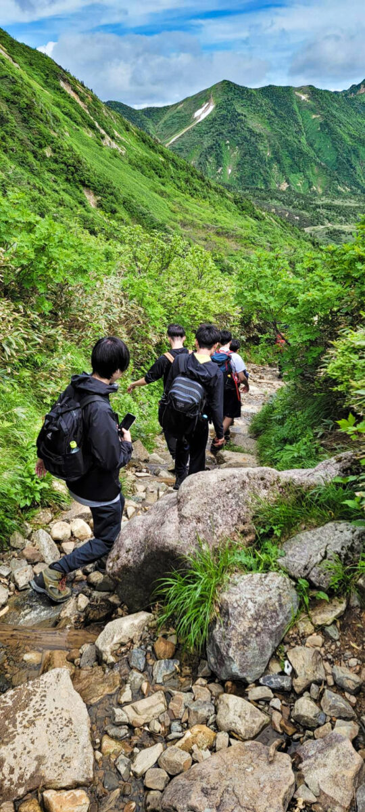
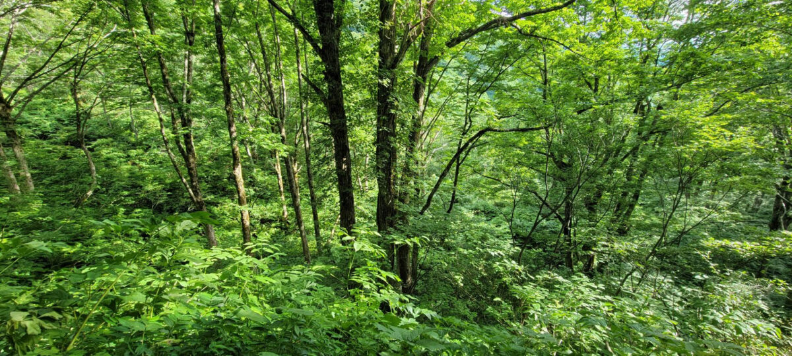
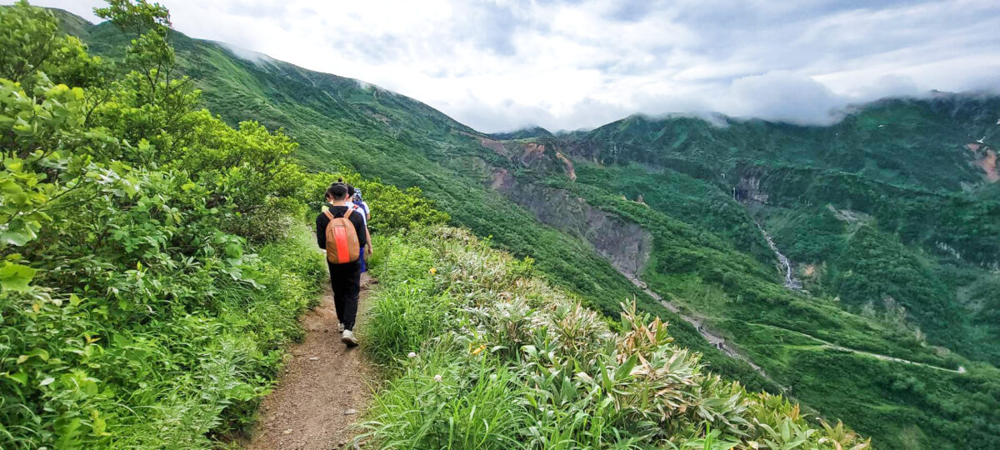

Because we have already walked for 5 hours, our legs were already on our peak.We ran down for the first 30 minutes but I realised that if I continued running like this, I wouldn't have any energy left near the bottom. So I walked more carefully and saved my energy. Then, we rested in a place with bushes. Because me and some of my friends ran so fast we had to wait for the rest of the team. I rested on top of a huge rock and sunbathed again. Then I slept on top of the rock for a hour. It felt so good. Near the bottom, my arm and face started hurting because of the sun burn. After walking for 3 hours with a death brain, we finally made it to the bottom!! We found a small bear on the bottom. The journy finally ended and it was fun from the beggining to the end.
  